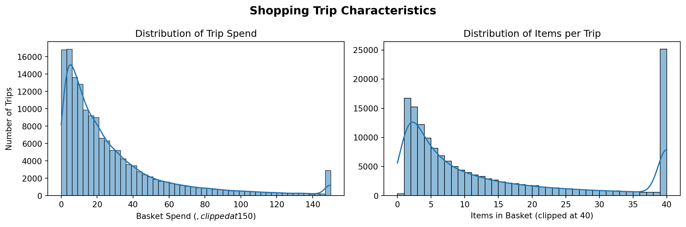
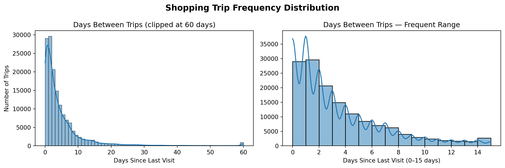
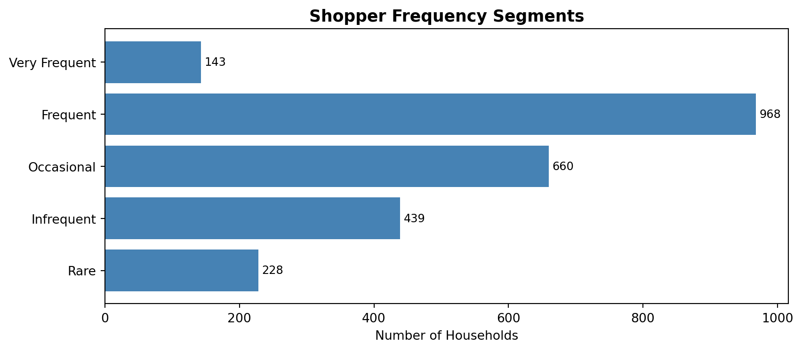
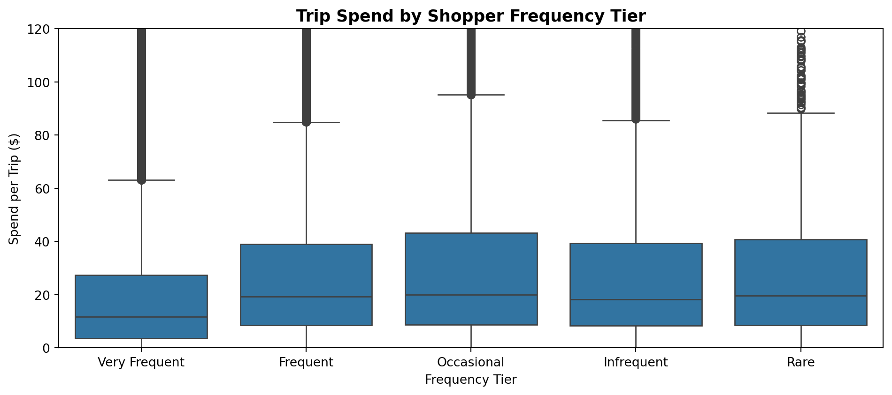
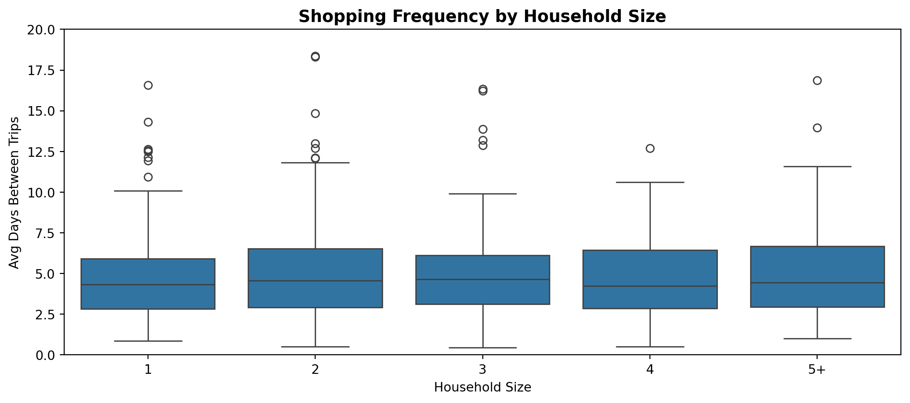
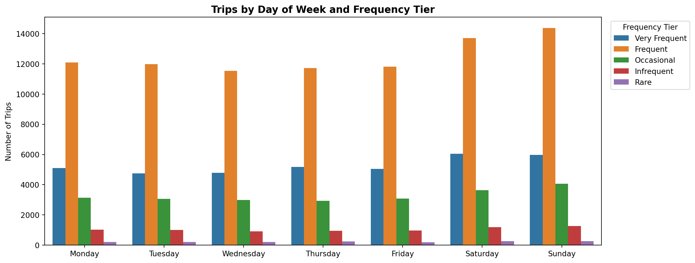
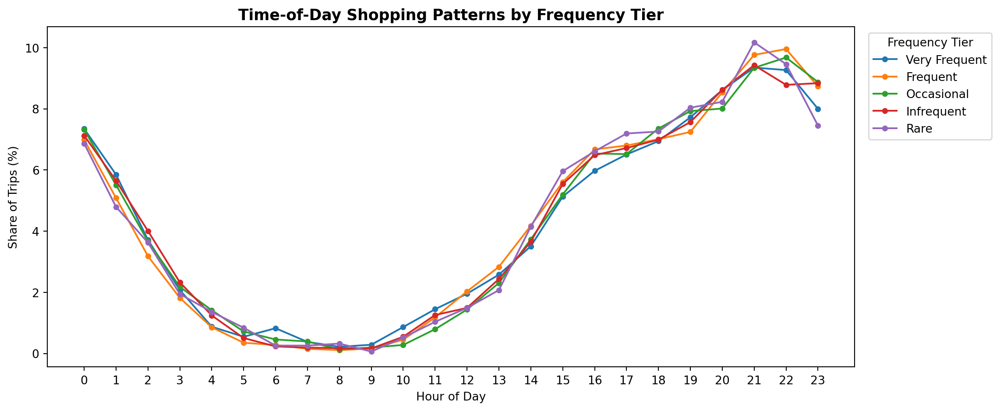

The retail analytics team at a regional grocery chain has been handed the Complete Journey dataset — 53 weeks of purchase records from 2,500 households — and a question: How well do we understand our shoppers? Specifically, how frequently do they visit, are there meaningful segments with distinct patterns, and do demographic factors explain those differences?
Before building models or preparing a presentation, the first step is the same every time: get in the data and see what it actually says.
Exploratory data analysis — EDA — is the practice of systematically getting to know a dataset before drawing conclusions from it. It is not a rigid procedure; it is a mindset. Good EDA starts with questions, follows the data, and surfaces insights that formal models alone would miss. The skills you have built across this course — wrangling, aggregating, joining, and visualizing — come together in EDA into a coherent investigative practice.
This chapter walks through a realistic EDA of the Complete Journey shopper data from start to finish. Rather than a series of isolated examples, every step builds on the last — from raw transactions to segmented household profiles to a set of actionable findings. The goal is not just to demonstrate techniques, but to model the process: how a working analyst actually thinks when handed a new dataset and a business question.
By the end of this chapter, you will be able to:
Apply data wrangling, aggregation, and visualization together in an integrated analytical workflow
Describe a systematic approach to exploratory data analysis
Use visualization to identify distributions, relationships, and segmentation patterns in real data
Communicate analytical findings as a coherent narrative
Note📓 Follow Along in Colab!
As you read through this chapter, we encourage you to follow along using the companion notebook in Google Colab (or other editor of choice).
Good exploratory analysis is not random. Before diving into code, it helps to have a mental framework for the order in which you approach a new dataset:
Start with questions. EDA works best when it is hypothesis-driven. Open-ended exploration (“I’ll just plot some things and see what happens”) tends to miss structure. A specific question focuses your attention.
Understand the structure first. Before creating a single visualization, know your data: shape, column types, key identifiers, missing values. A plot of malformed data is noise, not insight.
Explore distributions before relationships. Understand each variable individually before asking how variables relate to each other. A bivariate analysis you don’t understand because you skipped univariate exploration leads to confusion.
Let the data surprise you. The most valuable EDA discoveries are usually the ones you didn’t predict. Build in time to follow tangents — sometimes the tangent is the finding.
15.1 The Question
Our starting business question: How frequently do our shoppers visit, and what drives those patterns?
This is a good EDA question because it is specific enough to direct the analysis but open enough to allow discovery. It has a clear unit of analysis (the shopper household), a primary metric (visit frequency), and an implicit segmentation goal (finding different types of shoppers).
The datasets we need are transactions and demographics. Let’s start by loading them and orienting to what we have.
import pandas as pdimport matplotlib.pyplot as pltimport matplotlib.ticker as mtickimport seaborn as snsfrom completejourney_py import get_datacj_data = get_data()transactions = cj_data['transactions']demographics = cj_data['demographics']print(transactions.shape)print(demographics.shape)
transactions has one row per purchased item. basket_id links items to a single shopping trip; household_id links trips to a shopper.
Each transaction has a timestamp, quantity, and sales_value (the dollar amount paid).
demographics has one row per household with static attributes — income, household size, age, marital status.
The key join between these tables is on household_id. We will not merge them immediately. Instead, we will build our shopping-frequency metrics from transactions first, then join demographics in when we are ready to analyze patterns.
15.2 Understanding Shopping Trips
Before asking how often shoppers visit, we need to define and understand the unit of analysis: the shopping trip. In this dataset, a trip is identified by basket_id — all items purchased together in a single store visit share the same basket.
Let’s collapse the item-level transactions to a trip-level view: one row per basket, with total spend and total item count.
A quick look at the summary statistics tells us something immediately: the spend and items distributions are both right-skewed — the mean is notably higher than the median. Most trips are small-dollar and contain a moderate number of items, but a long tail of large, high-spend trips pulls the averages up.
Let’s confirm this visually with a side-by-side panel.
fig, axes = plt.subplots(1, 2, figsize=(12, 4))sns.histplot(trips['spend'].clip(upper=150), bins=50, kde=True, ax=axes[0])axes[0].set_title('Distribution of Trip Spend')axes[0].set_xlabel('Basket Spend ($, clipped at $150)')axes[0].set_ylabel('Number of Trips')sns.histplot(trips['items'].clip(upper=40), bins=40, kde=True, ax=axes[1])axes[1].set_title('Distribution of Items per Trip')axes[1].set_xlabel('Items in Basket (clipped at 40)')axes[1].set_ylabel('')fig.suptitle('Shopping Trip Characteristics', fontsize=14, fontweight='bold');plt.tight_layout()

Both distributions confirm the skew. The majority of trips are under $30 and contain fewer than 15 items, but the tails extend well beyond. When we later segment by shopping frequency, we will check whether these extremes are concentrated in particular shopper types.
Clipping a distribution for display purposes — as we do here with .clip(upper=150) — does not alter the data, only the plot. It is a common technique for revealing the shape of a distribution that would otherwise be compressed by a small number of extreme outliers. Always note the clip in your axis label so readers know what they are seeing.
15.3 Shopping Frequency
Now the core question: how often do households visit?
To measure this, we need the time gap between consecutive visits for each household. We will sort each household’s trips by date and use .diff() to calculate the number of days between successive trips.
The first trip for each household will produce a NaN — there is no previous trip to compare against. These are expected and will be handled when we aggregate to the household level.
Let’s look at the resulting distribution.
trips_sorted['days_since_last'].describe()
count 153379.000000
mean 5.118067
std 10.322012
min 0.000000
25% 1.000000
50% 2.000000
75% 6.000000
max 330.000000
Name: days_since_last, dtype: float64
The median inter-visit gap is quite short — most shoppers in this dataset visit very frequently. But the mean is higher, and the maximum can be very large. Let’s visualize this with two panels that show different views of the same data.
fig, axes = plt.subplots(1, 2, figsize=(12, 4))inter_visit = trips_sorted['days_since_last'].dropna()# Left: full distribution, clipped at 60 days to reveal overall shapesns.histplot(inter_visit.clip(upper=60), bins=60, kde=True, ax=axes[0])axes[0].set_title('Days Between Trips (clipped at 60 days)')axes[0].set_xlabel('Days Since Last Visit')axes[0].set_ylabel('Number of Trips')# Right: zoomed view to see the near-term peak clearlysns.histplot(inter_visit[inter_visit <=15], bins=15, kde=True, ax=axes[1])axes[1].set_title('Days Between Trips — Frequent Range')axes[1].set_xlabel('Days Since Last Visit (0–15 days)')axes[1].set_ylabel('')fig.suptitle('Shopping Trip Frequency Distribution', fontsize=14, fontweight='bold');plt.tight_layout()

The two panels together tell a richer story than either alone. The left panel shows the full distribution — most trips cluster near zero, with a long right tail. The right panel zooms into the first two weeks and reveals finer structure: a large spike at 0–2 days (households shopping multiple times in quick succession), followed by a fair amount of shoppers that go every 5-8 days (weekly shoppers). Also, notice the small but distinct spike at 14 days — bi-weekly shoppers. The long tail of infrequent shoppers is compressed in this view, but the left panel shows it clearly.
Showing the same data at two zoom levels is a habit worth developing. The wide view reveals overall shape and outliers; the narrow view reveals local structure that gets compressed at scale. Neither alone tells the whole story.
15.4 Segmenting Shoppers
Individual trip gaps are interesting, but the more actionable unit is the household — how often does a given shopper visit on average? We will now aggregate to the household level and classify each household into a frequency tier.
household_freq = ( trips_sorted .groupby('household_id')['days_since_last'] .agg( avg_days_between='mean', median_days_between='median' ) .reset_index() .dropna(subset=['avg_days_between']) # households with only one trip have no gap to measure)household_freq.head()
household_id
avg_days_between
median_days_between
0
1
7.160000
7.5
1
2
17.421053
10.0
2
3
18.368421
14.0
3
4
19.941176
12.0
4
5
15.210526
13.0
household_freq['avg_days_between'].describe()
count 2438.000000
mean 13.502052
std 19.306181
min 0.000000
25% 4.197674
50% 7.760870
75% 15.079545
max 272.000000
Name: avg_days_between, dtype: float64
With household-level averages in hand, we can classify each into a frequency tier. The cutoffs below reflect natural breaks in the distribution — shoppers who visit almost daily, weekly, bi-weekly, monthly, or rarely.
def classify_frequency(days):if days <=2:return'Very Frequent'elif days <=7:return'Frequent'elif days <=14:return'Occasional'elif days <=30:return'Infrequent'else:return'Rare'tier_order = ['Very Frequent', 'Frequent', 'Occasional', 'Infrequent', 'Rare']household_freq['frequency_tier'] = household_freq['avg_days_between'].apply(classify_frequency)
How do households distribute across tiers?
tier_counts = ( household_freq['frequency_tier'] .value_counts() .reindex(tier_order) .reset_index())tier_counts.columns = ['frequency_tier', 'n_households']fig, ax = plt.subplots(figsize=(9, 4))ax.barh(tier_counts['frequency_tier'], tier_counts['n_households'], color='steelblue')ax.set_xlabel('Number of Households')ax.set_title('Shopper Frequency Segments', fontsize=13, fontweight='bold')ax.invert_yaxis()for i, row in tier_counts.iterrows(): ax.text(row['n_households'] +5, i, str(row['n_households']), va='center', fontsize=9)plt.tight_layout()

Now the interesting question: do high-frequency shoppers spend more per trip — or less? You might expect more visits to mean more spending. But let’s check.
trip_spend_by_tier = ( trips_sorted .merge(household_freq[['household_id', 'frequency_tier']], on='household_id', how='inner'))fig, ax = plt.subplots(figsize=(10, 4.5))sns.boxplot( data=trip_spend_by_tier, x='frequency_tier', y='spend', order=tier_order, ax=ax)ax.set_ylim(0, 120)ax.set_xlabel('Frequency Tier')ax.set_ylabel('Spend per Trip ($)')ax.set_title('Trip Spend by Shopper Frequency Tier', fontsize=13, fontweight='bold')plt.tight_layout()

Look closely at the pattern: median spend per trip actually increases as you move from Very Frequent → Frequent → Occasional shoppers, then declines for Infrequent and Rare shoppers. This is a more nuanced story than a simple “frequent shoppers spend less.”
One plausible interpretation is that Very Frequent through Occasional shoppers tend to be loyal customers who treat this store as their primary grocery destination. They visit regularly to stock up on staples and everyday essentials — and the more loyally they shop, the more their per-trip basket grows, up through the Occasional tier. Infrequent and Rare shoppers, by contrast, are likely less loyal — perhaps they live farther away and only stop in when they happen to be in the area, or they use this store specifically for a handful of specialty items they can’t find elsewhere. Their smaller baskets reflect the fact that this store is not their primary destination.
This kind of behavioral segmentation — moving beyond simple frequency counts to ask why the pattern looks the way it does — is exactly what transforms an EDA from a collection of charts into an actionable analysis. A loyalty program intervention, for instance, would look very different for the Occasional segment (who may be convertible into Frequent shoppers) than for the Rare segment (who may need a fundamentally different type of engagement).
15.5 Demographic Patterns
We now have frequency tier assignments for each household. Let’s join demographics and ask whether these segments correspond to demographic characteristics.
Not all households in the transactions data have a matching demographics record — some may have opted out of the loyalty program’s demographic survey. We will proceed with the households that did match.
A few things stand out from the heatmap. First, the “Frequent” tier dominates across every income bracket — regardless of income level, the plurality of households fall into the 3–7 day average inter-visit range. Second, the dark, high-count cells at the 35–49K and 50–74K rows are largely a reflection of sample composition: those income bands simply have more households in this dataset, not evidence that middle-income shoppers behave differently. Third, there is a subtle trend worth noting: higher-income brackets ($100K+) show a slightly larger share of “Occasional” shoppers relative to their total count. This may reflect that higher-income households have more flexibility to consolidate grocery runs into fewer, larger trips — or to spread their spending across multiple stores. The small sample sizes at the top of the income distribution make this pattern tentative rather than conclusive, but it is a worthwhile hypothesis to investigate further.
Finally, notice that the Infrequent and Rare columns are nearly empty — almost no households in those tiers have a matching demographics record at all. This is not random missingness; it almost certainly reflects the fact that these shoppers never completed the loyalty program’s demographic survey. Loyal, regular customers are the ones who sign up for loyalty cards and fill out profile information — infrequent visitors who stop in once a month or less likely never bothered. This is itself a meaningful signal, and it reinforces the interpretation from the segmentation section: the Infrequent and Rare tiers are populated by shoppers who are not truly loyal to this store, visit only under special circumstances, and have little invested in the retailer relationship.
Does household size matter?
size_order = ['1', '2', '3', '4', '5+']fig, ax = plt.subplots(figsize=(10, 4.5))sns.boxplot( data=demo_freq.dropna(subset=['household_size', 'avg_days_between']), x='household_size', y='avg_days_between', order=size_order, ax=ax)ax.set_ylim(0, 20)ax.set_xlabel('Household Size')ax.set_ylabel('Avg Days Between Trips')ax.set_title('Shopping Frequency by Household Size', fontsize=13, fontweight='bold')plt.tight_layout()

Unlike what intuition might suggest, household size does not appear to be a strong driver of shopping frequency in this dataset. The median inter-visit gap is remarkably consistent across all household sizes — single-person households visit just about as often as households of five or more. This is itself an interesting finding: whatever is driving visit frequency, it does not seem to be the consumption-rate logic of “larger households run out of food faster.” It is a good reminder that intuitive hypotheses do not always hold up in the data, and that EDA’s job is to test those assumptions rather than confirm them.
TipA Note on Polished Output
The charts in this section were built quickly with Seaborn defaults. If you were preparing this analysis for a stakeholder presentation, you would reach for Matplotlib to control title size, axis formatting, and layout in ways that match your organization’s visual standards. The Matplotlib section of Ch14 showed you exactly how to do that — and the ax object returned by Seaborn’s functions accepts all the same Matplotlib customizations.
15.6 Weekly Shopping Patterns
One more dimension worth exploring: does shopping behavior vary by day of the week, and does that pattern differ across frequency tiers?
day_order = ['Monday', 'Tuesday', 'Wednesday', 'Thursday', 'Friday', 'Saturday', 'Sunday']trips_with_tier = ( trips_sorted .assign(day_of_week=lambda x: x['trip_date'].dt.day_name()) .merge(household_freq[['household_id', 'frequency_tier']], on='household_id', how='inner'))day_tier_counts = ( trips_with_tier .groupby(['frequency_tier', 'day_of_week']) .size() .reset_index(name='n_trips'))fig, ax = plt.subplots(figsize=(13, 5))sns.barplot( data=day_tier_counts, x='day_of_week', y='n_trips', hue='frequency_tier', order=day_order, hue_order=tier_order, ax=ax)ax.set_xlabel('')ax.set_ylabel('Number of Trips')ax.set_title('Trips by Day of Week and Frequency Tier', fontsize=13, fontweight='bold')ax.legend(title='Frequency Tier', bbox_to_anchor=(1.01, 1), loc='upper left')plt.tight_layout()

The Frequent tier (orange) dominates trip volume on every day of the week — consistent with it being the largest segment. More interesting is the weekend pattern: Saturday and Sunday see elevated trip counts across all frequency tiers, not just among occasional visitors. Very Frequent, Frequent, and Occasional shoppers all tick up on weekends relative to weekdays, suggesting this store experiences a broad-based weekend surge driven by its core loyal shoppers, not just by one-off visitors. The relative composition of tiers looks fairly consistent from Monday through Friday, with the main story being that weekends simply bring more shoppers of every type through the door.
Time of Day
A natural follow-on question is whether frequency tiers differ in when during the day they tend to shop. Do very frequent shoppers — who may be stopping in for quick errands — skew toward different hours than occasional shoppers making a planned weekly trip?
To answer this we need the hour of each trip. Because trip_date was normalized to midnight during our earlier aggregation, we go back to the original transactions to recover the timestamp, then join in the frequency tier assignments.
basket_hour = ( transactions .groupby('basket_id')['transaction_timestamp'] .first() .dt.hour .reset_index() .rename(columns={'transaction_timestamp': 'hour_of_day'}))hour_tier = ( trips_sorted[['basket_id', 'household_id']] .drop_duplicates() .merge(basket_hour, on='basket_id') .merge(household_freq[['household_id', 'frequency_tier']], on='household_id') .groupby(['frequency_tier', 'hour_of_day']) .size() .reset_index(name='n_trips'))# Normalize within each tier so tiers of different sizes are comparablehour_tier['pct_trips'] = ( hour_tier .groupby('frequency_tier')['n_trips'] .transform(lambda x: x / x.sum() *100))fig, ax = plt.subplots(figsize=(12, 5))for tier in tier_order: data = hour_tier[hour_tier['frequency_tier'] == tier] ax.plot(data['hour_of_day'], data['pct_trips'], marker='o', markersize=4, label=tier)ax.set_xlabel('Hour of Day')ax.set_ylabel('Share of Trips (%)')ax.set_title('Time-of-Day Shopping Patterns by Frequency Tier', fontsize=13, fontweight='bold')ax.set_xticks(range(0, 24))ax.legend(title='Frequency Tier', bbox_to_anchor=(1.01, 1), loc='upper left')plt.tight_layout()

This is a striking non-finding — and non-findings matter just as much as discoveries in EDA. All five frequency tiers follow a nearly identical time-of-day curve: moderate late-night activity around midnight, a sharp trough bottoming out around 7–8am, then a steady climb through the afternoon and evening to a peak around 9–10pm. The lines are almost indistinguishable from one another.
What this tells us is that shopping frequency is about how often someone visits, not when during the day they shop. A Very Frequent shopper who visits every day and a Rare shopper who visits once a month both tend to show up in the evening. This rules out time-of-day as a meaningful differentiator across segments — a useful thing to know when deciding, for example, whether time-targeted promotions would behave differently across frequency groups. They likely would not.
15.7 Telling the Story
Six sections of analysis later, we have enough to tell a coherent story. A good EDA doesn’t end with a collection of charts — it ends with a narrative that translates findings into language a decision-maker can act on.
Key Findings:
There is no single “typical” shopper. Frequency is highly variable — most households fall into the Frequent tier (visiting every 3–7 days), but a meaningful tail of Infrequent and Rare visitors exists. Any marketing strategy that treats the shopper base as homogeneous is leaving value on the table. Segmenting by frequency is the foundation for more targeted decisions.
Spending per trip follows a loyalty-shaped curve. Median trip spend increases as you move from Very Frequent to Occasional shoppers, then drops sharply for Infrequent and Rare visitors. The interpretation: loyal, regular customers consolidate their staple purchases into progressively larger baskets as their store relationship deepens. Infrequent visitors, by contrast, are making one-off or errand trips with no brand affinity — smaller baskets, lower commitment. This matters because it means high-frequency is not the same as high-value per visit, and the Occasional tier may represent the most commercially attractive segment: loyal enough to shop consistently, spending enough per trip to be high-margin.
Demographics do not reliably explain frequency. Income does not predict which tier a household falls into — the “Frequent” tier dominates across every income bracket. Household size shows no consistent trend either. Critically, Infrequent and Rare shoppers are almost entirely absent from the demographics table, suggesting they never enrolled in the loyalty program — itself a signal of low store engagement. When demographics fail to explain a behavioral pattern, the explanation is usually behavioral, not demographic.
Weekend traffic is a broad-based surge, not a segment effect. All frequency tiers see elevated trip counts on Saturday and Sunday. This is not driven by occasional visitors consolidating to weekends — it is the store’s core loyal shoppers who drive the weekend spike just as much. The implication for operations is clear: weekend staffing decisions should be driven by overall volume, not by assumptions about who is shopping.
All segments shop at the same time of day. Regardless of how often a household visits, they all follow an identical time-of-day curve: near-zero between 5–9am, building through the day, peaking at 9–10pm. Frequency is purely about how often, not when. Time-targeted promotions and time-of-day staffing adjustments would not produce different outcomes across frequency segments.
What Would We Investigate Next?
Good EDA does not close questions — it opens better ones. The findings above naturally generate several high-value follow-on directions:
Cumulative annual value by segment. Very Frequent shoppers spend less per trip, but they make far more trips. Do they actually accumulate more total annual spend than Occasional shoppers who spend more per visit? This question is essential before designing any loyalty program intervention — the answer determines whether the highest-frequency households are your most valuable customers or merely your most active.
Basket composition by tier. What are frequent shoppers actually buying? If Very Frequent shoppers are primarily purchasing bread, milk, and produce — replenishment staples — while Occasional shoppers are buying higher-margin items like prepared foods or specialty products, the merchandising implications are very different. Understanding basket composition by frequency tier would shape both product assortment and promotional strategy.
Loyalty trajectory over time. The dataset spans 53 weeks. Are Infrequent shoppers declining (slowly churning out of the customer base), stable, or gradually increasing their visits? A household that shopped 8 times in the first quarter but only twice in the fourth quarter is a very different business problem than one that shopped infrequently but consistently throughout the year. Tracking frequency tier changes over the dataset window would separate structural infrequency from churn-in-progress.
Promotional activation for low-frequency segments. Infrequent and Rare shoppers have small baskets and low store loyalty, but they do visit — which means they can, in principle, be activated. Do these households respond disproportionately to coupon offers or promotional pricing? If so, targeted promotions during their known shopping windows (weekend evenings, based on the time-of-day analysis) could convert some into higher-frequency visitors.
TipYour EDA Checklist
When you sit down to start your own EDA — for this course’s project or in any analytical role — use this as a starting template:
Write down your business question before opening a notebook.
Orient to the data: .shape, .info(), .describe(), and .isnull().sum().
Define the right unit of analysis and aggregate to it before asking relational questions.
Explore individual variables first — distributions reveal skew, outliers, and unexpected concentrations.
Build visualizations progressively — start simple, add complexity only when the insight demands it.
Embrace non-findings. A variable that does not predict your outcome is a result, not a failure.
Write a findings summary in words, not just code output. If you cannot articulate the insight in a sentence, you do not yet understand it.
15.8 Project Checkpoint and Exercises
The workflow in this chapter — question → structure → distributions → segmentation → story — is exactly the workflow to apply at the start of your midterm project. This section bridges the two: it connects the EDA framework to your project and gives you a structured exercise to begin putting it into practice.
Connecting to your project
This week’s lab is where you will draft your midterm project proposals, and you’ll pick one to submit for homework. Before you do, work through these questions honestly:
Have you written your question down? If you opened a notebook and started plotting at random, stop and go back. One specific, well-formed question is worth more than ten exploratory charts without direction.
Have you explored distributions before relationships? Understanding each variable individually before asking how they relate prevents a whole class of errors that are hard to diagnose after the fact.
Did the data surprise you? The most valuable EDA insight is almost always the one you did not predict. If nothing has surprised you yet, you probably have not looked hard enough — or you have been confirming assumptions rather than testing them.
Can you write a five-bullet findings summary? If not, your EDA is still a collection of charts, not a completed analysis. Force yourself to write the story before you decide you’re done.
Exercise: Developing your own EDA questions
NoneTry This!
Your midterm project will require you to conduct an EDA similar to the one in this chapter — but on a question and analytical angle of your own choosing. This exercise is about developing and sharpening that question.
Step 1: Brainstorm questions. Using the Complete Journey data, write down at least three distinct questions you could investigate. Each question should be specific enough to direct an analysis but open enough to allow discovery. Here are examples to spark your thinking:
Which product categories are most sensitive to promotional pricing — and does sensitivity vary by household income or size?
Do stores differ meaningfully in the types of shoppers they attract, and can store “profiles” be identified from basket and demographic data?
How does coupon usage vary across demographic segments, and do coupon-heavy shoppers actually spend more or simply pay less?
Are there day-of-week or time-of-year patterns in which product categories get purchased, and do those patterns differ across household types?
Step 2: Evaluate your questions. For each question you wrote, answer the following:
What is the unit of analysis? (trip, household, store, product, day?)
Which datasets and columns do you need?
What would a clear finding look like — what would you expect to see, and what would surprise you?
Step 3: Choose one and plan the analysis. Pick the question you find most interesting or most relevant to your project. Write a brief (5–10 sentence) plan describing the datasets you would join, the aggregations you would build, the visualizations you would produce, and what story you hope to tell. Bring this plan to class — we will use it as the foundation for your project EDA checkpoint.